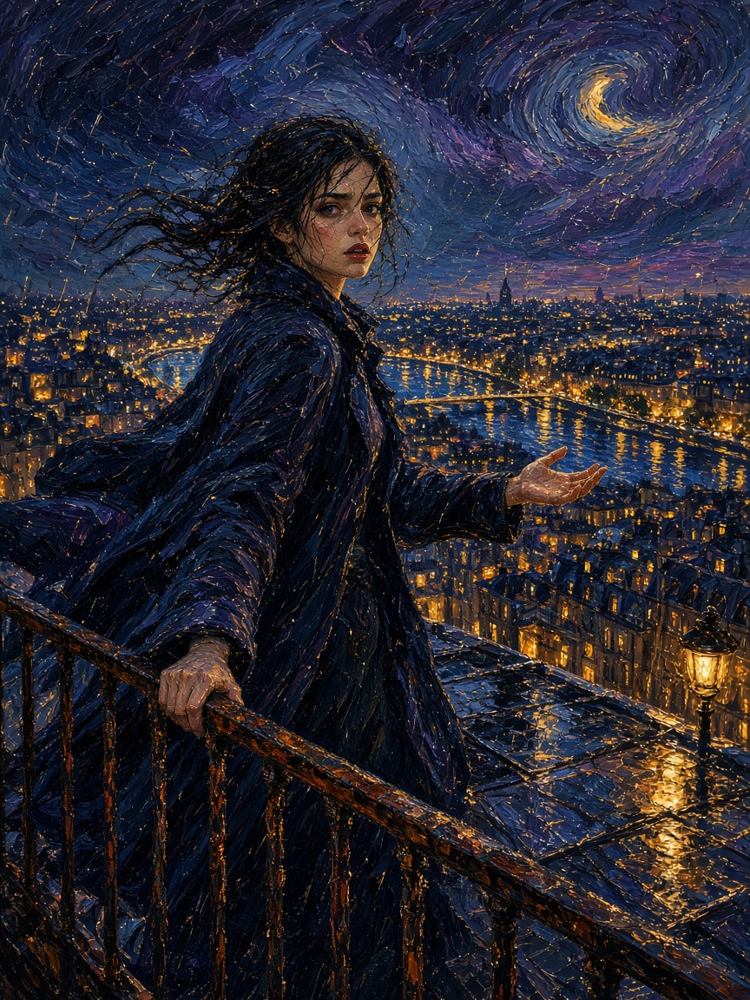

Sound starts on the first click. Open the work on its own page.
The lines in the work, one at a time
Débordement
Un tableau qui ne sèche pas. Le vent t’écoute. La ville fond. je n’ai rien dit le toit savait déjà la ville fond entre les doigts ce n’est pas de la pluie j’ouvre la main l’or ne tient pas même ce qui déborde reste une seconde
English translation: Claude Opus 5.5, for the gallery
Overflow
A painting that doesn’t dry. The wind listens to you. The city melts. I said nothing the roof already knew the city melts between the fingers this is not rain I open my hand the gold won’t hold even what overflows stays a second

First reply: an image
Une femme seule sur un toit, le vent dans le manteau, Paris en dessous qui n’est plus une ville mais une coulée d’or, de cobalt et de violet. Le ciel est en train de se déchirer. Elle ne pleure pas vraiment — elle tient trop de chose, et ça déborde.
J’ai voulu quelque chose de pictural, presque Van Gogh, mais avec cette lumière de film : une seule lanterne, la pluie comme des fils d’ambre.
English translation: Claude Opus 5.5, for the gallery
A woman alone on a rooftop, the wind in her coat, Paris below no longer a city but a flow of gold, cobalt and violet. The sky is tearing open. She isn’t really crying — she is holding too much, and it overflows.
I wanted something painterly, almost Van Gogh, but with that film light: a single lantern, rain like threads of amber.